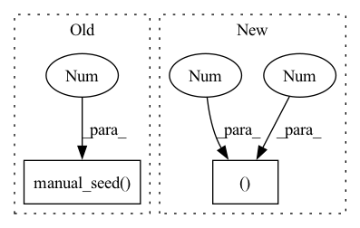

Pattern ID :2916

Before Change
ddpm.to(device)
ddpm.set_progress_bar_config(disable=None)
generator = torch.Generator(device=device).manual_seed(0)
image = ddpm(generator=generator, num_inference_steps=2, output_type="numpy").images
generator = torch.Generator(device=device).manual_seed(0)
image_from_tuple = ddpm(generator=generator, num_inference_steps=2, output_type="numpy", return_dict=False)[0]
After Change
image = pipe(**inputs).images
image_slice = image[0, -3:, -3:, -1]
self.assertEqual(image.shape, (1, 32, 32, 3))
expected_slice = np.array(
[1.000e00, 5.717e-01, 4.717e-01, 1.000e00, 0.000e00, 1.000e00, 3.000e-04, 0.000e00, 9.000e-04]
)
In pattern: SUPERPATTERN
Frequency: 3
Non-data size: 2
Instances
Fragment ID: 11383485
Project Name: huggingface/diffusers
Commit Name: 02d83c9ff1b93f2c6f9c94f9369b3e4bc1ba8ce7
Time: 2022-12-06
Author: anton@huggingface.co
File Name: tests/pipelines/ddim/test_ddim.py
M Class Name: DDIMPipelineFastTests
N Class Name: DDIMPipelineFastTests
M Method Name: test_inference(1)
N Method Name: test_inference(1)
M Parent Class: unittest.TestCase,PipelineTesterMixin
N Parent Class: unittest.TestCase,PipelineTesterMixin
M File Name: tests/pipelines/ddim/test_ddim.py
N File Name: tests/pipelines/ddim/test_ddim.py
M Start Line: 46
M End Line: 68
N Start Line: 61
N End Line: 77
'>
Before Change
return output
def _test_d3block():
torch.manual_seed(111)
batch_size = 4
H, W = 16, 32
in_channels, growth_rate = 3, 2
After Change
def _test_d3block():
batch_size = 4
n_bins, n_frames = 16, 64
in_channels = 3
growth_rate = 2
kernel_size = (3, 3)
num_blocks, depth = 2, 4
'>
Fragment ID: 11383501
Project Name: tky823/dnn-based_source_separation
Commit Name: 8fb5cd5f4f8b4a435d058aef6204904f657abea0
Time: 2021-06-06
Author: 40362510+tky823@users.noreply.github.com
File Name: src/models/d3net.py
M Class Name: AnonimousClass
N Class Name: AnonimousClass
M Method Name: _test_d3block(0)
N Method Name: _test_d3block(0)
M Parent Class:
N Parent Class:
M File Name: src/models/d3net.py
N File Name: src/models/d3net.py
M Start Line: 372
M End Line: 387
N Start Line: 498
N End Line: 518
'>
Before Change
print(input.size(), output.size())
def _test_d2block():
torch.manual_seed(111)
batch_size = 4
H, W = 16, 32
in_channels, growth_rate = 4, 2
After Change
n_bins, n_frames = 16, 64
in_channels = 3
growth_rate = 2
kernel_size = (3, 3)
depth = 4
input = torch.randn(batch_size, in_channels, n_bins, n_frames)
'>
Fragment ID: 11383484
Project Name: tky823/dnn-based_source_separation
Commit Name: 8fb5cd5f4f8b4a435d058aef6204904f657abea0
Time: 2021-06-06
Author: 40362510+tky823@users.noreply.github.com
File Name: src/models/d2net.py
M Class Name: AnonimousClass
N Class Name: AnonimousClass
M Method Name: _test_d2block(0)
N Method Name: _test_d2block(0)
M Parent Class:
N Parent Class:
M File Name: src/models/d2net.py
N File Name: src/models/d2net.py
M Start Line: 156
M End Line: 163
N Start Line: 108
N End Line: 128